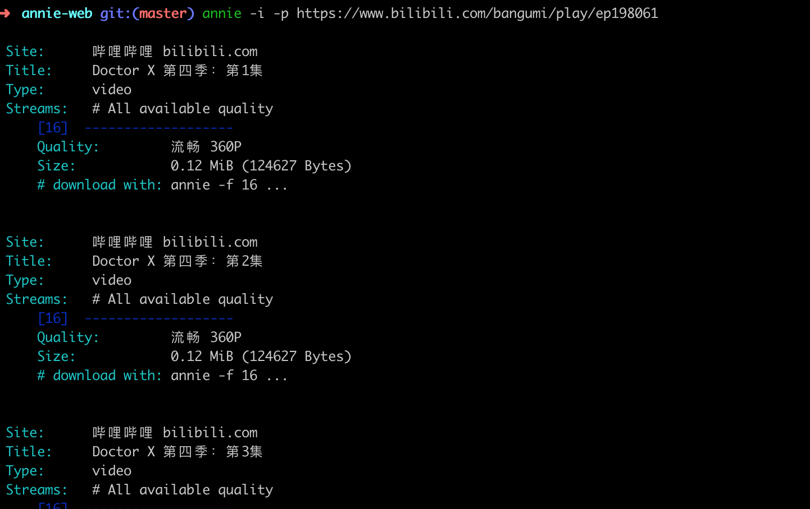
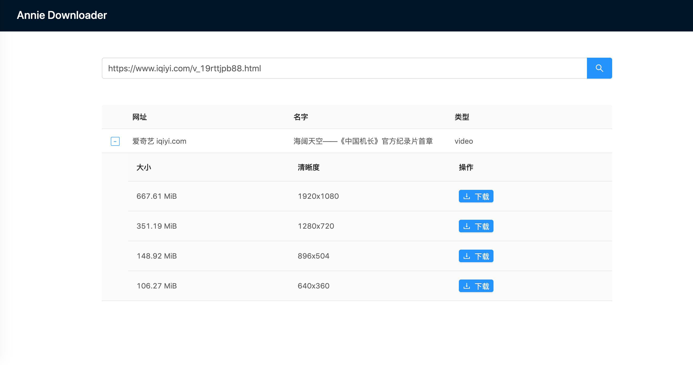
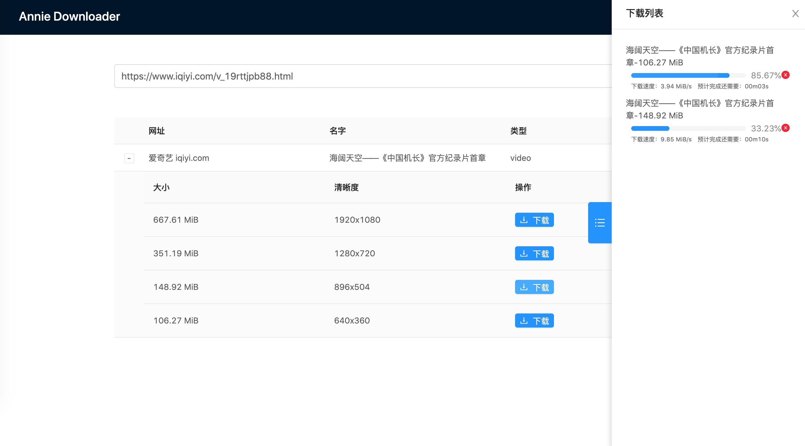
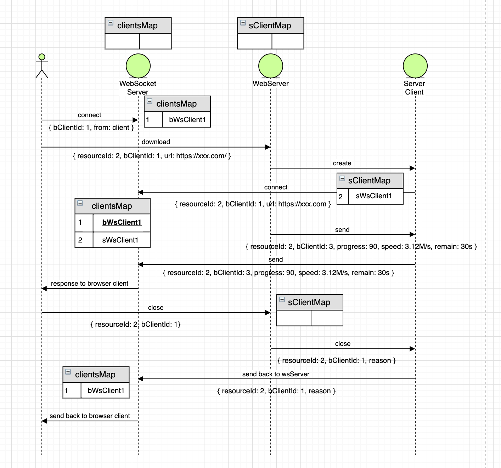

为什么做这个东西，是突然间听一后端同事说起Annie这个东西，发现这个东西下载视频挺方便的，会自动爬取网页中的视频，然后整理成列表。发现用命令执行之后是下面的样子：

心里琢磨了下，整一个界面玩一下吧。然后就做成下面这个样子了。


本文地址仓库：https://github.com/Rynxiao/yh-tools，如果喜欢，欢迎star.
其中还有点小插曲，最开始是使用docker起了一个nginx服务，但是发现内部转发一直有问题，同时获取宿主主机IP也出现了点问题，然后折磨了好久放弃了。（docker研究不深，敬请谅解^_^）

首先浏览器会连接WebSocket服务器，同时在WebSocket服务器上存在一个所有客户端的Map，浏览器端生成一个uuid作为浏览器客户端id，然后将这个链接作为值存进Map中。
客户端：
// list.jsx
await WebSocketClient.connect((event) => {
const data = JSON.parse(event.data);
if (data.event === 'close') {
this.updateCloseStatusOfProgressBar(list, data);
} else {
this.generateProgressBarList(list, data);
}
});
// src/utils/websocket.client.js
async connect(onmessage, onerror) {
const socket = this.getSocket();
return new Promise((resolve) => {
// ...
});
}
getSocket() {
if (!this.socket) {
this.socket = new WebSocket(
`ws://localhost:${CONFIG.PORT}?from=client&id=${clientId}`,
'echo-protocol',
);
}
return this.socket;
}服务端：
// public/javascript/websocket/websocket.server.js
connectToServer(httpServer) {
initWsServer(httpServer);
wsServer.on('request', (request) => {
// uri: ws://localhost:8888?from=client&id=xxxx-xxxx-xxxx-xxxx
logger.info('[ws server] request');
const connection = request.accept('echo-protocol', request.origin);
const queryStrings = querystring.parse(request.resource.replace(/(^\/|\?)/g, ''));
// 每有连接连到websocket服务器，就将当前连接保存到map中
setConnectionToMap(connection, queryStrings);
connection.on('message', onMessage);
connection.on('close', (reasonCode, description) => {
logger.info(`[ws server] connection closed ${reasonCode} ${description}`);
});
});
wsServer.on('close', (connection, reason, description) => {
logger.info('[ws server] some connection disconnect.');
logger.info(reason, description);
});
}然后在浏览器端点击下载的时候，会传递两个主要的字段resourceId(在代码中由parentId和childId组成)和客户端生成的bClientId。这两个id有什么用呢？
Web服务器中生成一个WebSocket的客户端，那么这个resouceId就是作为在服务器中生成的WebSocket服务器的key值。bClientId主要是为了区分浏览器的客户端，因为考虑到同时可能会有多个浏览器接入，这样在WebSocket服务器中产生消息的时候，就可以用这个id来区分应该发送给哪个浏览器客户端客户端：
// list.jsx
http.get(
'download',
{
code,
filename,
parent_id: row.id,
child_id: childId,
download_url: url,
client_id: clientId,
},
);
// routes/api.js
router.get('/download', async (req, res) => {
const { code, filename } = req.query;
const url = req.query.download_url;
const clientId = req.query.client_id;
const parentId = req.query.parent_id;
const childId = req.query.child_id;
const connectionId = `${parentId}-${childId}`;
const params = {
code,
url,
filename,
parent_id: parentId,
child_id: childId,
client_id: clientId,
};
const flag = await AnnieDownloader.download(connectionId, params);
if (flag) {
await res.json({ code: 200 });
} else {
await res.json({ code: 500, msg: 'download error' });
}
});
// public/javascript/annie.js
async download(connectionId, params) {
//...
// 当annie下载时，会进行数据监听，这里会用到节流，防止进度回传太快，websocket服务器无法反应
downloadProcess.stdout.on('data', throttle((chunk) => {
try {
if (!chunk) {
isDownloading = false;
}
// 这里主要做的是解析数据，然后发送进度和速度等信息给websocket服务器
getDownloadInfo(chunk, ws, params);
} catch (e) {
downloadSuccess = false;
WsClient.close(params.client_id, connectionId, 'download error');
this.stop(connectionId);
logger.error(`[server annie download] error: ${e}`);
}
}, 500, 300));
}服务端收到进度以及速度的消息后，回传给客户端，如果进度达到了100%，那么就删除掉存在server中的服务器中起的websocket的客户端，并且发送一个客户端被关闭的通知，通知浏览器已经下载完成。
// public/javascript/websocket/websocket.server.js
function onMessage(message) {
const data = JSON.parse(message.utf8Data);
const id = data.client_id;
if (data.event === 'close') {
logger.info('[ws server] close event');
closeConnection(id, data);
} else {
getConnectionAndSendProgressToClient(data, id);
}
}
function getConnectionAndSendProgressToClient(data, clientId) {
const browserClient = clientsMap.get(clientId);
// logger.info(`[ws server] send ${JSON.stringify(data)} to client ${clientId}`);
if (browserClient) {
const serverClientId = `${data.parent_id}-${data.child_id}`;
const serverClient = clientsMap.get(serverClientId);
// 发送从web服务器中传过来的进度、速度给浏览器
browserClient.send(JSON.stringify(data));
// 如果进度已经达到了100%
if (data.progress >= 100) {
logger.info(`[ws server] file has been download successfully, progress is ${data.progress}`);
logger.info(`[ws server] server client ${serverClientId} ready to disconnect`);
// 从clientsMap将当前的这个由web服务器创建的websocket客户端移除
// 然后关闭当前连接
// 同时发送下载完成的消息给浏览器
clientsMap.delete(serverClientId);
serverClient.send(JSON.stringify({ connectionId: serverClientId, event: 'complete' }));
serverClient.close('download completed');
}
}
}整体来说就这么多，有一点需要指出，annie在解析的时候有时候可能消息处理不是很稳定，导致我数据解析的时候出现了一些问题，但是我用mock的数据以及mock的进度条回传是不会出现问题的。
多读书，多看报，少吃零食，多睡觉😪😪💤